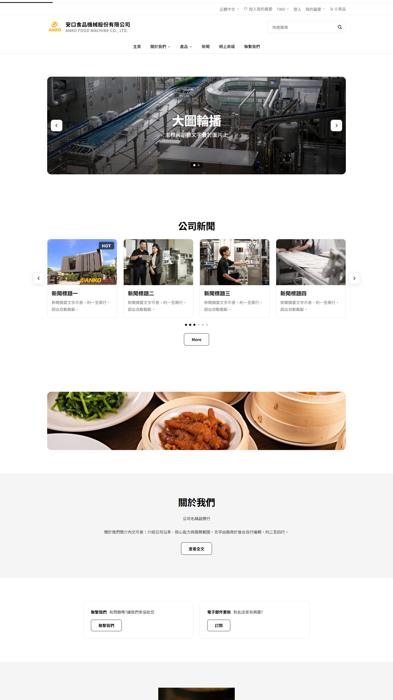
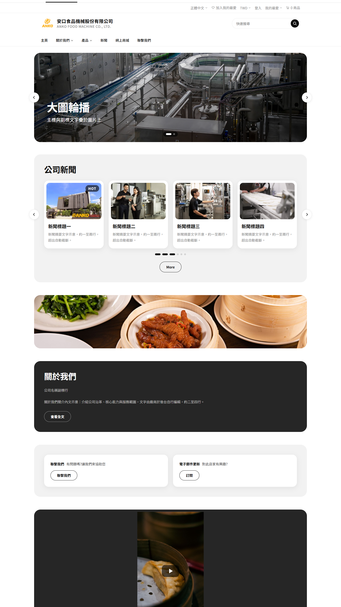

第一次需求訪談｜2026-07-28
凌網資訊 Simmy
今天談
1. 新版型風格設計（兩個版本選一版）
2. 新 Header＋Footer
3. 現有元件強化（多媒體／產品展示／圖文範本）
4. 新元件（聯絡我們商機表單）
之後談
1. SU 建站引導（8/7）
2. 切版＋產品型錄（8/21）
1. 新版型風格設計
2. 新 Header＋Footer 設計
3. 現有 8 元件配合調整
4. YT Short 可在首頁播放（多媒體輪播）
5. 產品展示 tab 呈現
6. 圖文模板新範本（CTA 樣式一／二＋數據統計）
7. Contact us 表單元件（聯絡電話＋商機表單）
參考 Xometry 蒸餾出的設計邏輯：
1. 區塊之間不畫線，用滿版底色和留白切段
2. 標題置中開場、卡片內文字靠左
3. 滿版色帶直角，圓角只給卡片與按鈕

| 元件 | 特色 | 確認 |
|---|---|---|
| 頁首 | 上方讓給廠商品牌，TT 元素退場 | 1｜Header 右上功能列是否搬移 |
| 大圖輪播 | 形象大圖開場，標語壓圖置中 | — |
| 公司新聞 | 熱門消息自動掛 HOT 標，統一右上 | 2｜按鈕文字是否統一中文 |
| 橫幅廣告・關於我們・聯繫與訂閱 | 聯繫與訂閱變成兩張卡片 | — |
| 多媒體輪播 | 手機拍的直式短影片，直接放上首頁 | 3｜YT Short 置中直式或並排多則 |
| 產品展示 | 多條產品線用分頁切換，同一區塊放得下 | — |
| 圖文模板新範本 | 多三款版面：兩款行動呼籲＋一款秀公司數字 | — |
| 聯絡我們商機表單 | 買主在首頁就能發詢價、直接進商機清單；電話一點就撥 | 4｜表單欄位以哪份為準 5｜表單預設收合或展開 6｜必填星號黑或紅 7｜桌機是否點按複製號碼 |
| 頁尾 | 官方資訊、認證、版權收成一塊黑，乾淨收尾 | 8｜頁尾是否保留聯絡我們區塊 9｜認證徽章是否移至頁尾 |
同一份骨架、由設計師提案進行蒸餾：
1. 每個區塊收進圓角面板，區塊即卡片
2. 內容全部靠左對齊，閱讀動線一致
3. 按鈕與標籤採正圓膠囊，柔和親和

V1 穩重
適合機械、零組件、B2B 製造
V2 親和
適合消費品、服務業、多品項通路
設計混搭
以一版為主體、局部採另一版
V1
V2
| 項目 | V1 | V2 |
|---|---|---|
| 排版軸線 | 置中開場、卡內文字靠左 | 全部靠左 |
| 分段方式 | 滿版淺灰帶切段 | 圓角面板 |
| 深色使用 | 全頁只有頁尾黑 | 深面板點綴＋頁尾黑 |
| 圓角 | 方圓角（工業感） | 正圓膠囊（親和感） |
| 分頁 tab | 淺灰槽＋黑色滑塊 | 文字底線 |
| 陰影 | 幾乎不用 | 柔影＋滑過浮起 |
| 留白 | 大（大器） | 緊湊（密度高） |
| 輪播箭頭 | 照現況兩種位置 | 統一騎在邊線上 |
| 大圖文字 | 置中疊圖 | 壓左下 |
| 標記 | 方角黑標 | 膠囊黑標 |
| 產品卡 | 文字壓在圖上 | 文字在圖下 |
| CTA一背景 | 淺色照片＋白遮罩黑字 | 同照片＋黑遮罩白字 |
| 確認 | 題目 | 結果 |
|---|---|---|
| 1 | Header 右上功能列是否搬移 | 照原樣不搬／搬部分（現場記項目）／全部搬 |
| 2 | 按鈕文字是否統一中文 | 統一為「查看更多」／維持現況「More」 |
| 3 | YT Short 置中直式或並排多則 | 置中直式／並排多則 |
| 4 | 表單欄位以哪份為準 | 產品詢價表單（demo 版）／聯絡供應商表單 |
| 5 | 表單預設收合或展開 | 預設收合／預設全展開 |
| 6 | 必填星號黑或紅 | 黑色星號／紅色星號 |
| 7 | 桌機是否點按複製號碼 | 點按複製號碼／僅顯示號碼 |
| 8 | 頁尾是否保留聯絡我們區塊 | 保留（做成可開關）／不保留（以新表單為主）／其他 |
| 9 | 認證徽章是否移至頁尾 | 移至頁尾（數量隨認證動態）／維持頁首 |
| 10 | 風格方向 | V1／V2／設計混搭（項目於差異對照頁點選） |
未拍板的項目，會後以書面確認，於設計稿前收齊。
1. 今天定調的風格，我們將整理成設計稿提供貴處審核。
2. 8/7 第二次訪談：SU 建站引導
・後台建站流程整併（首頁配置與資料編輯重新設計）
・版型與色系設定加入新版型選項、各語系同步
・今天定案元件的後台設定（產品展示分頁、YT Short、圖文模板新範本）
謝謝，其他問題歡迎現在提出。